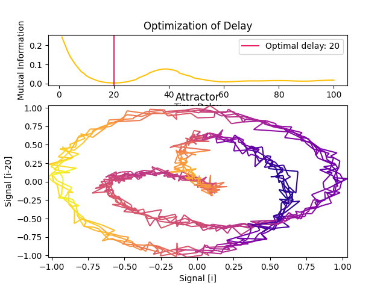
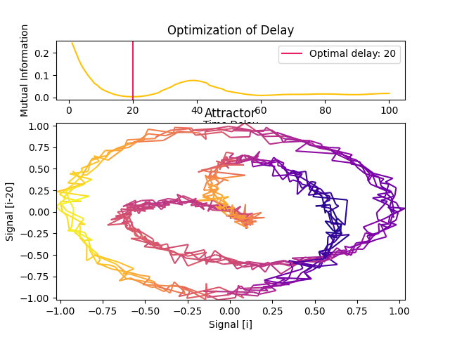
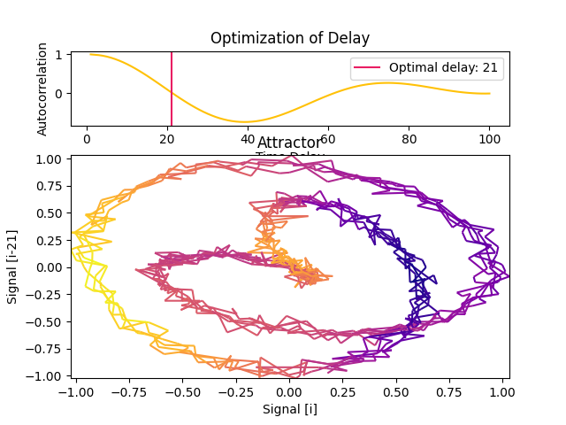
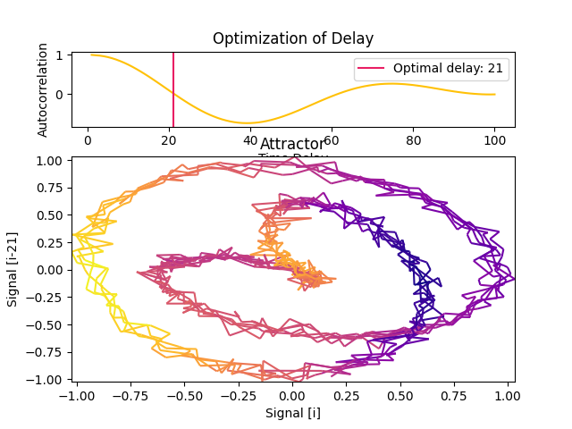
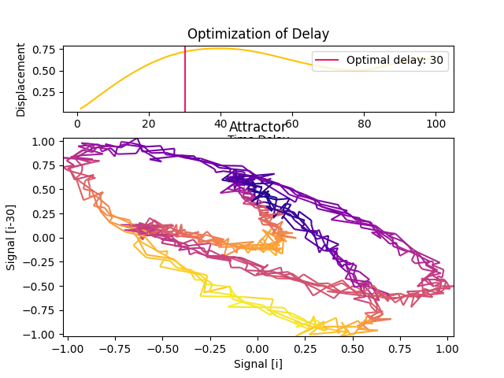
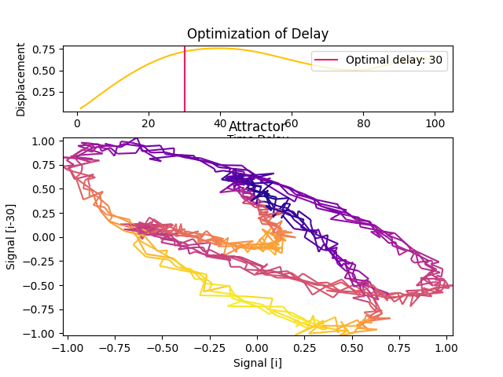
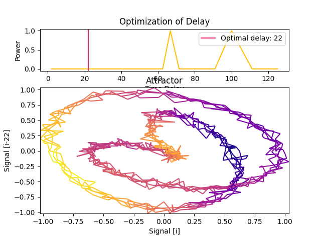
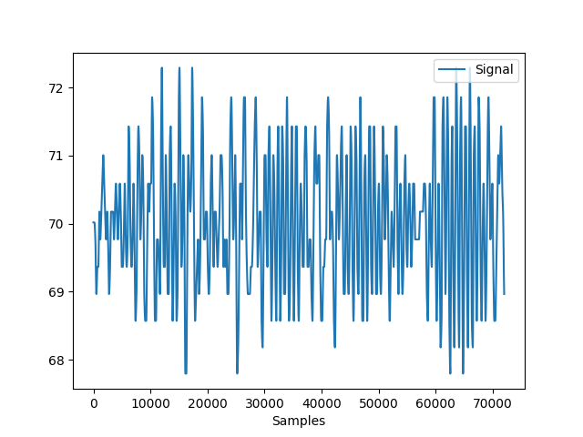
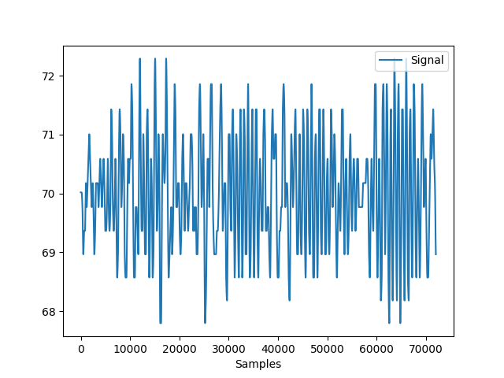
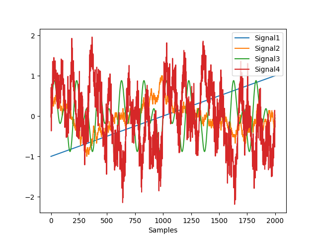

Complexity
Contents
Complexity#
Main#
complexity()#
- complexity(signal, which=['fast', 'medium'], delay=1, dimension=2, tolerance='default', **kwargs)#
Automated Complexity and Chaos Analysis
This function can be used to compute a large number of complexity metrics and features. For more control, you can run each function separately. Note that it does not include Recurrence Quantification Analysis (RQA,
nk.complexity_rqa()) which currently requires an additional dependency.The categorization by “computation time” is based on our preliminary benchmarking study results:

- Parameters
signal (Union[list, np.array, pd.Series]) – The signal (i.e., a time series) in the form of a vector of values.
which (list) – What metrics to compute, based on their computation time. Can be
"fast","medium", or"slow".delay (int) – Time delay (often denoted ‘Tau’ \(\tau\), sometimes referred to as ‘lag’) in samples. See
complexity_delay()to choose the optimal value for this parameter.dimension (int) – See for example
entropy_sample().tolerance (float) – See for example
entropy_sample().
- Returns
df (pd.DataFrame) – A dataframe with one row containing the results for each metric as columns.
info (dict) – A dictionary containing additional information.
See also
entropy_permutation,entropy_differential,entropy_svd,fractal_katz,fractal_petrosian,fractal_sevcik,fisher_information,complexity_hjorth,complexity_rqaExamples
Example 1: Compute fast and medium-fast complexity metrics
In [1]: import neurokit2 as nk # Simulate a signal of 3 seconds In [2]: signal = nk.signal_simulate(duration=3, frequency=[5, 10]) # Fast metrics In [3]: df, info = nk.complexity(signal, which = ["fast", "medium"]) In [4]: df Out[4]: ApEn CREn DiffEn ... ShanEn SpEn WPEn 0 0.162527 -0.009219 0.303891 ... 11.271005 0.094806 0.98896 [1 rows x 23 columns]
Example 2: Compute slow complexity metrics
# Slow, with specific parameters for Higuchi and MFDFA In [5]: df, info = nk.complexity(signal, which = "slow", k_max=6, q=range(-2, 2)) In [6]: df Out[6]: CD DFA FuzzyEn ... MFDFA_ExpRange RCMSE RangeEn 0 0.830716 1.389359 0.128788 ... 0.348173 0.318944 0.188515 [1 rows x 13 columns]
Example 3: Compute complexity over time
In [7]: import numpy as np In [8]: import pandas as pd In [9]: import neurokit2 as nk # Create dynamically varying noise In [10]: amount_noise = nk.signal_simulate(duration=2, frequency=0.9) In [11]: amount_noise = nk.rescale(amount_noise, [0, 0.5]) In [12]: noise = np.random.uniform(0, 2, len(amount_noise)) * amount_noise # Add to simple signal In [13]: signal = noise + nk.signal_simulate(duration=2, frequency=5) In [14]: nk.signal_plot(signal, sampling_rate = 1000)

# Create function-wrappers that only return the index value In [15]: pfd = lambda x: nk.fractal_petrosian(x)[0] In [16]: kfd = lambda x: nk.fractal_katz(x)[0] In [17]: sfd = lambda x: nk.fractal_sevcik(x)[0] In [18]: svden = lambda x: nk.entropy_svd(x)[0] In [19]: fisher = lambda x: -1 * nk.fisher_information(x)[0] # FI is anticorrelated with complexity # Use them in a rolling window In [20]: rolling_kfd = pd.Series(signal).rolling(500, min_periods = 300, center=True).apply(kfd) In [21]: rolling_pfd = pd.Series(signal).rolling(500, min_periods = 300, center=True).apply(pfd) In [22]: rolling_sfd = pd.Series(signal).rolling(500, min_periods = 300, center=True).apply(sfd) In [23]: rolling_svden = pd.Series(signal).rolling(500, min_periods = 300, center=True).apply(svden) In [24]: rolling_fisher = pd.Series(signal).rolling(500, min_periods = 300, center=True).apply(fisher) In [25]: nk.signal_plot([signal, ....: rolling_kfd.values, ....: rolling_pfd.values, ....: rolling_sfd.values, ....: rolling_svden.values, ....: rolling_fisher], ....: labels = ["Signal", ....: "Petrosian Fractal Dimension", ....: "Katz Fractal Dimension", ....: "Sevcik Fractal Dimension", ....: "SVD Entropy", ....: "Fisher Information"], ....: sampling_rate = 1000, ....: standardize = True) ....:

Parameters Choice#
complexity_delay()#
- complexity_delay(signal, delay_max=100, method='fraser1986', algorithm=None, show=False, **kwargs)#
Automated selection of the optimal Delay (Tau)
The time delay (Tau \(\tau\), also referred to as Lag) is one of the two critical parameters (the other being the
Dimensionm) involved in the construction of the time-delay embedding of a signal. It corresponds to the delay in samples between the original signal and its delayed version(s). In other words, how many samples do we consider between a given state of the signal and its closest past state.When \(\tau\) is smaller than the optimal theoretical value, consecutive coordinates of the system’s state are correlated and the attractor is not sufficiently unfolded. Conversely, when \(\tau\) is larger than it should be, successive coordinates are almost independent, resulting in an uncorrelated and unstructured cloud of points.
Several authors suggested different methods to guide the choice of the delay:
Fraser and Swinney (1986) suggest using the first local minimum of the mutual information between the delayed and non-delayed time series, effectively identifying a value of Tau for which they share the least information.
Theiler (1990) suggested to select Tau where the autocorrelation between the signal and its lagged version at Tau first crosses the value \(1/e\).
Casdagli (1991) suggests instead taking the first zero-crossing of the autocorrelation.
Rosenstein (1993) suggests to approximate the point where the autocorrelation function drops to \((1 - 1/e)\) of its maximum value.
Rosenstein (1994) suggests to the point close to 40% of the slope of the average displacement from the diagonal (ADFD).
Kim (1999) suggests estimating Tau using the correlation integral, called the C-C method, which has shown to agree with those obtained using the Mutual Information. This method makes use of a statistic within the reconstructed phase space, rather than analyzing the temporal evolution of the time series. However, computation times are significantly long for this method due to the need to compare every unique pair of pairwise vectors within the embedded signal per delay.
Gautama (2003) mentions that in practice, it is common to have a fixed time lag and to adjust the embedding dimension accordingly. As this can lead to large m values (and thus to embedded data of a large size) and thus, slow processing, they describe an optimisation method to jointly determine m and \(\tau\) (see
complexity_optimize()).Lyle (2021) describes the “Symmetric Projection Attractor Reconstruction” (SPAR), where \(1/3\) of the the dominant frequency (i.e., of the length of the average “cycle”) can be a suitable value for approximately periodic data, and makes the attractor sensitive to morphological changes. See also Aston’s talk. This method is also the fastest but might not be suitable for aperiodic signals. The
algorithmargument (default to"fft") and will be passed as themethodargument ofsignal_psd().
- Parameters
signal (Union[list, np.array, pd.Series]) – The signal (i.e., a time series) in the form of a vector of values.
delay_max (int) – The maximum time delay (Tau or lag) to test.
method (str) – The method that defines what to compute for each tested value of Tau. Can be one of
'fraser1986','theiler1990','casdagli1991','rosenstein1993','rosenstein1994','kim1999', or'lyle2021'.algorithm (str) – The method used to find the optimal value of Tau given the values computed by the method. If None (default), will select the algorithm according to the method. Modify only if you know what you are doing.
show (bool) – If true, will plot the metric values for each value of tau.
**kwargs (optional) – Additional arguments to be passed for C-C method.
- Returns
delay (int) – Optimal time delay.
parameters (dict) – A dictionary containing additional information regarding the parameters used to compute optimal time-delay embedding.
See also
complexity,complexity_dimension,complexity_embedding,complexity_toleranceExamples
Example 1: Comparison of different methods for estimating the optimal delay of an simple artificial signal.
In [1]: import neurokit2 as nk In [2]: signal = nk.signal_simulate(duration=10, frequency=1, noise=0.01) In [3]: nk.signal_plot(signal)
 
In [4]: delay, parameters = nk.complexity_delay(signal, delay_max=1000, show=True, ...: method="fraser1986") ...:
In [5]: delay, parameters = nk.complexity_delay(signal, delay_max=1000, show=True, ...: method="theiler1990") ...:
 
In [6]: delay, parameters = nk.complexity_delay(signal, delay_max=1000, show=True, ...: method="casdagli1991") ...:
In [7]: delay, parameters = nk.complexity_delay(signal, delay_max=1000, show=True, ...: method="rosenstein1993") ...:
 
In [8]: delay, parameters = nk.complexity_delay(signal, delay_max=1000, show=True, ...: method="rosenstein1994") ...:
In [9]: delay, parameters = nk.complexity_delay(signal, delay_max=1000, show=True, ...: method="lyle2021") ...:
Example 2: Using a realistic signal.
In [10]: ecg = nk.ecg_simulate(duration=60*6, sampling_rate=200) In [11]: signal = nk.ecg_rate(nk.ecg_peaks(ecg, sampling_rate=200), ....: sampling_rate=200, ....: desired_length=len(ecg)) ....: In [12]: nk.signal_plot(signal)
 
In [13]: delay, parameters = nk.complexity_delay(signal, delay_max=1000, show=True)
References
Lyle, J. V., Nandi, M., & Aston, P. J. (2021). Symmetric Projection Attractor Reconstruction: Sex Differences in the ECG. Frontiers in cardiovascular medicine, 1034.
Gautama, T., Mandic, D. P., & Van Hulle, M. M. (2003, April). A differential entropy based method for determining the optimal embedding parameters of a signal. In 2003 IEEE International Conference on Acoustics, Speech, and Signal Processing, 2003. Proceedings. (ICASSP’03). (Vol. 6, pp. VI-29). IEEE.
Camplani, M., & Cannas, B. (2009). The role of the embedding dimension and time delay in time series forecasting. IFAC Proceedings Volumes, 42(7), 316-320.
Rosenstein, M. T., Collins, J. J., & De Luca, C. J. (1993). A practical method for calculating largest Lyapunov exponents from small data sets. Physica D: Nonlinear Phenomena, 65(1-2), 117-134.
Rosenstein, M. T., Collins, J. J., & De Luca, C. J. (1994). Reconstruction expansion as a geometry-based framework for choosing proper delay times. Physica-Section D, 73(1), 82-98.
Kim, H., Eykholt, R., & Salas, J. D. (1999). Nonlinear dynamics, delay times, and embedding windows. Physica D: Nonlinear Phenomena, 127(1-2), 48-60.
{kind=link}
{kind=link}
{kind=link}
{kind=link}
{kind=link}
complexity_dimension()#
- complexity_dimension(signal, delay=1, dimension_max=20, method='afnn', show=False, **kwargs)#
Automated selection of the optimal Embedding Dimension (m)
The Embedding Dimension (m, sometimes referred to as d or order) is the second critical parameter (the first being the
delay\(\tau\)) involved in the construction of the time-delay embedding of a signal. It corresponds to the number of delayed states (versions of the signals lagged by \(\tau\)) that we include in the embedding.Though one can commonly find values of 2 or 3 used in practice, several authors suggested different numerical methods to guide the choice of m:
Correlation Dimension (CD): One of the earliest method to estimate the optimal m was to calculate the
correlation dimensionfor embeddings of various sizes and look for a saturation (i.e., a plateau) in its value as the embedding dimension increases. One of the limitation is that a saturation will also occur when there is not enough data to adequately fill the high-dimensional space (note that, in general, having such large embeddings that it significantly shortens the length of the signal is not recommended).FNN (False Nearest Neighbour): The method, introduced by Kennel et al. (1992), is based on the assumption that two points that are near to each other in the sufficient embedding dimension should remain close as the dimension increases. The algorithm checks the neighbours in increasing embedding dimensions until it finds only a negligible number of false neighbours when going from dimension \(m\) to \(m+1\). This corresponds to the lowest embedding dimension, which is presumed to give an unfolded space-state reconstruction. This method can fail in noisy signals due to the futile attempt of unfolding the noise (and in purely random signals, the amount of false neighbors does not substantially drops as m increases).
AFN (Average False Neighbors): This modification by Cao (1997) of the FNN method addresses one of its main drawback, the need for a heuristic choice for the tolerance thresholds
R. It uses the maximal Euclidian distance to represent nearest neighbors, and averages all ratios of the distance in \(m+1\) to \(m\) dimension and defines E1 as a parameter. The optimal dimension corresponds to when E1(d) stops changing (reaches a plateau).
- Parameters
signal (Union[list, np.array, pd.Series]) – The signal (i.e., a time series) in the form of a vector of values.
delay (int) – Time delay (often denoted Tau \(\tau\), sometimes referred to as Lag) in samples. See
complexity_delay()to choose the optimal value for this parameter.dimension_max (int) – The maximum embedding dimension to test.
method (str) – Can be
"afn"(Average False Neighbor),"fnn"(False Nearest Neighbour), or"cd"(Correlation Dimension).show (bool) – Visualize the result.
**kwargs – Other arguments, such as
R=10.0orA=2.0(relative and absolute tolerance, only for ‘fnn’ method).
- Returns
delay (int) – Optimal dimension.
parameters (dict) – A dictionary containing additional information regarding the parameters used to compute the optimal dimension.
Examples
In [1]: import neurokit2 as nk In [2]: signal = nk.signal_simulate(duration=10, frequency=1, noise=0.01) # Find optimal delay In [3]: delay, parameters = nk.complexity_delay(signal, delay_max=500) # Find optimal dimension In [4]: optimal_dimension, info = nk.complexity_dimension(signal, ...: delay=delay, ...: dimension_max=20, ...: method='afnn', ...: show=True) ...:
In [5]: optimal_dimension, info = nk.complexity_dimension(signal, ...: delay=delay, ...: dimension_max=20, ...: method='fnn', ...: show=True) ...:
References
Kennel, M. B., Brown, R., & Abarbanel, H. D. (1992). Determining embedding dimension for phase-space reconstruction using a geometrical construction. Physical review A, 45(6), 3403.
Cao, L. (1997). Practical method for determining the minimum embedding dimension of a scalar time series. Physica D: Nonlinear Phenomena, 110(1-2), 43-50.
Rhodes, C., & Morari, M. (1997). The false nearest neighbors algorithm: An overview. Computers & Chemical Engineering, 21, S1149-S1154.
Krakovská, A., Mezeiová, K., & Budáčová, H. (2015). Use of false nearest neighbours for selecting variables and embedding parameters for state space reconstruction. Journal of Complex Systems, 2015.
Gautama, T., Mandic, D. P., & Van Hulle, M. M. (2003, April). A differential entropy based method for determining the optimal embedding parameters of a signal. In 2003 IEEE International Conference on Acoustics, Speech, and Signal Processing, 2003. Proceedings. (ICASSP’03). (Vol. 6, pp. VI-29). IEEE.
{kind=link}
{kind=link}
complexity_tolerance()#
- complexity_tolerance(signal, method='maxApEn', r_range=None, delay=None, dimension=None, show=False)#
Automated selection of tolerance (r)
Estimate and select the optimal tolerance (r) parameter used by other entropy and other complexity algorithms.
Many complexity algorithms are built on the notion of self-similarity and recurrence, and how often a system revisits its past states. Considering two states as identical is straightforward for discrete systems (e.g., a sequence of “A”, “B” and “C” states), but for continuous signals, we cannot simply look for when the two numbers are exactly the same. Instead, we have to pick a threshold by which to consider two points as similar.
The tolerance r is essentially this threshold value (the numerical difference between two similar points that we “tolerate”). This parameter has a critical impact and is a major source of inconsistencies in the literature.
Different methods have been described to estimate the most appropriate tolerance value:
'maxApEn': Different values of tolerance will be tested and the one where the approximate entropy (ApEn) is maximized will be selected and returned.'sd'(as in Standard Deviation): r = 0.2 * standard deviation of the signal will be returned.'recurrence', the tolerance that yields a recurrence rate (seeRQA) close to 5% will be returned.
- Parameters
signal (Union[list, np.array, pd.Series]) – The signal (i.e., a time series) in the form of a vector of values.
method (str) – Can be ‘maxApEn’ (default), ‘sd’, or ‘recurrence’.
r_range (Union[list, int]) – The range of tolerance values (or the number of values) to test. Only used if
methodis'maxApEn'or'recurrence'. IfNone(default), the default range will be used;np.linspace(0.02, 0.8, r_range) * np.std(signal, ddof=1)for'maxApEn', andnp. linspace(0, np.max(d), 30 + 1)[1:]for'recurrence'. You can set a lower number for faster results.delay (int) – Only used if
method='maxApEn'. Seeentropy_approximate().dimension (int) – Only used if
method='maxApEn'. Seeentropy_approximate().show (bool) – If true and method is ‘maxApEn’, will plot the ApEn values for each value of r.
See also
complexity,complexity_delay,complexity_dimension,complexity_embedding- Returns
float – The optimal tolerance value.
dict – A dictionary with the values of r and the corresponding ApEn values (when method=’maxApEn’).
Examples
Example 1: The method based on the SD of the signal is fast. The plot shows the d distribution of the values making the signal, and the width of the arrow represents the chosen
rparameter.
In [1]: import neurokit2 as nk # Simulate signal In [2]: signal = nk.signal_simulate(duration=2, frequency=5) # Fast method (based on the standard deviation) In [3]: r, info = nk.complexity_tolerance(signal, method = 'SD', show=True) In [4]: r Out[4]: 0.07072836242007384

Example 2: The method based on the recurrence rate will display the rates according to different values of tolerance. The horizontal line indicates 5%.
In [5]: r, info = nk.complexity_tolerance(signal, delay=1, dimension=10, ...: method = 'recurrence', show=True) ...: In [6]: r Out[6]: 0.1259621536795725

Example 3: The default method selects the tolerance at which ApEn is maximized.
# Slow method In [7]: r, info = nk.complexity_tolerance(signal, delay=8, dimension=6, ...: method = 'maxApEn', show=True) ...: In [8]: r Out[8]: 0.014145672484014769

Example 4: The tolerance values that are tested can be modified to get a more precise estimate.
# Narrower range In [9]: r, info = nk.complexity_tolerance(signal, delay=8, dimension=6, method = 'maxApEn', ...: r_range=np.linspace(0.002, 0.8, 30), show=True) ...: In [10]: r Out[10]: 0.6624137931034483

References
Lu, S., Chen, X., Kanters, J. K., Solomon, I. C., & Chon, K. H. (2008). Automatic selection of the threshold value r for approximate entropy. IEEE Transactions on Biomedical Engineering, 55(8), 1966-1972.
Fractal Dimension#
fractal_katz()#
- fractal_katz(signal)#
Katz’s Fractal Dimension (KFD)
Computes Katz’s Fractal Dimension (KFD), based on euclidean distances between successive points in the signal which are summed and averaged, and the maximum distance between the starting and any other point in the sample.
Here, fractal dimensions range from 1.0 for straight lines, through approximately 1.15 for random-walk waveforms, to approaching 1.5 for the most convoluted waveforms.
- Parameters
signal (Union[list, np.array, pd.Series]) – The signal (i.e., a time series) in the form of a vector of values.
- Returns
kfd (float) – Katz’s fractal dimension of the single time series.
info (dict) – A dictionary containing additional information (currently, but returned nonetheless for consistency with other functions).
Examples
Step 1. Simulate different kinds of signals
In [1]: import neurokit2 as nk In [2]: import numpy as np # Simulate straightline In [3]: straight = np.linspace(-1, 1, 2000) # Simulate random In [4]: random = nk.complexity_simulate(duration=2, method="randomwalk") In [5]: random = nk.rescale(random, [-1, 1]) # Simulate simple In [6]: simple = nk.signal_simulate(duration=2, frequency=[5, 10]) # Simulate simple In [7]: complex = nk.signal_simulate(duration=2, ...: frequency=[1, 3, 6, 12], ...: noise = 0.1) ...: In [8]: nk.signal_plot([straight, random, simple, complex])
Step 2. Compute KFD for each of them
In [9]: KFD, _ = nk.fractal_katz(straight) In [10]: KFD Out[10]: 1.0 In [11]: KFD, _ = nk.fractal_katz(random) In [12]: KFD Out[12]: 1.4524845240655835 In [13]: KFD, _ = nk.fractal_katz(simple) In [14]: KFD Out[14]: 2.041857476392026 In [15]: KFD, _ = nk.fractal_katz(complex) In [16]: KFD Out[16]: 3.8802339550821743
References
Katz, M. J. (1988). Fractals and the analysis of waveforms. Computers in Biology and Medicine, 18(3), 145-156. doi:10.1016/0010-4825(88)90041-8.
{kind=link}
fractal_petrosian()#
- fractal_petrosian(signal, method='C')#
Petrosian fractal dimension (PFD)
Petrosian proposed a fast method to estimate the fractal dimension of a finite sequence, which converts the data to binary sequence before estimating the fractal dimension from time series. Several variations of the algorithm exist (e.g., ‘A’, ‘B’, ‘C’ or ‘D’), primarily differing in the way the binary sequence is created.
See also
mutual_information,entropy_svd- Parameters
signal (Union[list, np.array, pd.Series]) – The signal (i.e., a time series) in the form of a vector of values.
method (str) – Can be ‘A’, ‘B’, ‘C’ or ‘D’. Method ‘A’ binarizes the signal by higher vs. lower values as compated to the signal’s mean. Method ‘B’ uses values that are within the mean +/- 1 SD band vs. values that are outside this band. Method ‘C’ computes the difference between consecutive samples and binarizes depending on their sign. Method ‘D’ forms separates consecutive samples that exceed 1 signal’s SD from the others smaller changes.
- Returns
pfd (float) – The petrosian fractal dimension (PFD).
info (dict) – A dictionary containing additional information regarding the parameters used to compute PFD.
Examples
In [1]: import neurokit2 as nk In [2]: signal = nk.signal_simulate(duration=2, frequency=5) In [3]: pfd, info = nk.fractal_petrosian(signal, method = "A") In [4]: pfd Out[4]: 1.0245302965822858 In [5]: info Out[5]: {'Method': 'A'} In [6]: pfd, info = nk.fractal_petrosian(signal, method = "B") In [7]: pfd Out[7]: 1.02411541221877 In [8]: pfd, info = nk.fractal_petrosian(signal, method = "C") In [9]: pfd Out[9]: 1.000499242265518 In [10]: pfd, info = nk.fractal_petrosian(signal, method = "D") In [11]: pfd Out[11]: 1.0
References
Kumar, D. K., Arjunan, S. P., & Aliahmad, B. (2017). Fractals: applications in biological Signalling and image processing. CRC Press.
Goh, C., Hamadicharef, B., Henderson, G., & Ifeachor, E. (2005, June). Comparison of fractal dimension algorithms for the computation of EEG biomarkers for dementia. In 2nd International Conference on Computational Intelligence in Medicine and Healthcare (CIMED2005).
fractal_sevcik()#
- fractal_sevcik(signal)#
Sevcik fractal dimension (SFD)
The SFD algorithm was proposed to calculate the fractal dimension of waveforms by Sevcik (1998). This method can be used to quickly measure the complexity and randomness of a signal.
Note
Some papers (e.g., Wang et al. 2017) suggest adding
np.log(2)to the numerator, but it’s unclear why, so we sticked to the original formula for now. But if you have an idea, please let us know!- Parameters
signal (Union[list, np.array, pd.Series]) – The signal (i.e., a time series) in the form of a vector of values.
- Returns
sfd (float) – The sevcik fractal dimension.
info (dict) – An empty dictionary returned for consistency with the other complexity functions.
See also
Examples
In [1]: import neurokit2 as nk In [2]: signal = nk.signal_simulate(duration=2, frequency=5) In [3]: sfd, _ = nk.fractal_sevcik(signal) In [4]: sfd Out[4]: 1.3614382329000476
References
Sevcik, C. (2010). A procedure to estimate the fractal dimension of waveforms. arXiv preprint arXiv:1003.5266.
Kumar, D. K., Arjunan, S. P., & Aliahmad, B. (2017). Fractals: applications in biological Signalling and image processing. CRC Press.
Wang, H., Li, J., Guo, L., Dou, Z., Lin, Y., & Zhou, R. (2017). Fractal complexity-based feature extraction algorithm of communication signals. Fractals, 25(04), 1740008.
Goh, C., Hamadicharef, B., Henderson, G., & Ifeachor, E. (2005, June). Comparison of fractal dimension algorithms for the computation of EEG biomarkers for dementia. In 2nd International Conference on Computational Intelligence in Medicine and Healthcare (CIMED2005).
fractal_nld()#
- fractal_nld(signal, corrected=False)#
Fractal dimension via Normalized Length Density (NLD)
This method was developed for measuring signal complexity of very short durations (< 30 samples), and can be used for instance when continuous signal FD changes (or “running” FD) are of interest (by computing it on sliding windows, see example).
For methods such as Higuchi’s FD, the standard deviation of the window FD increases sharply when the epoch becomes shorter. The NLD method results in lower standard deviation especially for shorter epochs, though at the expense of lower accuracy in average window FD.
See also
fractal_higuchi- Parameters
signal (Union[list, np.array, pd.Series]) – The signal (i.e., a time series) in the form of a vector of values.
corrected (bool) – If
True, will rescale the output value according to the power model estimated by Kalauzi et al. (2009) to make it more comparable with “true” FD range, as follows:FD = 1.9079*((NLD-0.097178)^0.18383). Note that this can result innp.nanif the result of the difference is negative.
- Returns
fd (DataFrame) – A dataframe containing the fractal dimension across epochs.
info (dict) – A dictionary containing additional information (currently, but returned nonetheless for consistency with other functions).
Examples
Example 1: Usage on a short signal
In [1]: import neurokit2 as nk # Simulate a short signal with duration of 0.5s In [2]: signal = nk.signal_simulate(duration=0.5, frequency=[3, 5]) # Compute Fractal Dimension In [3]: fd, _ = nk.fractal_nld(signal, corrected=False) In [4]: fd Out[4]: 0.023078518326126455
Example 2: Compute FD-NLD on non-overlapping windows
In [5]: import numpy as np # Simulate a long signal with duration of 5s In [6]: signal = nk.signal_simulate(duration=5, frequency=[3, 5, 10], noise=0.1) # We want windows of size=100 (0.1s) In [7]: n_windows = len(signal) // 100 # How many windows # Split signal into windows In [8]: windows = np.array_split(signal, n_windows) # Compute FD-NLD on all windows In [9]: nld = [nk.fractal_nld(i, corrected=False)[0] for i in windows] In [10]: np.mean(nld) # Get average Out[10]: 0.5865857719949535
Example 3: Calculate FD-NLD on sliding windows
# Simulate a long signal with duration of 5s In [11]: signal = nk.signal_simulate(duration=5, frequency=[3, 5, 10], noise=0.1) # Add period of noise In [12]: signal[1000:3000] = signal[1000:3000] + np.random.normal(0, 1, size=2000) # Create function-wrapper that only return the NLD value In [13]: nld = lambda x: nk.fractal_nld(x, corrected=False)[0] # Use them in a rolling window of 100 samples (0.1s) In [14]: rolling_nld = pd.Series(signal).rolling(100, min_periods = 100, center=True).apply(nld) In [15]: nk.signal_plot([signal, rolling_nld], subplots=True, labels=["Signal", "FD-NLD"])

References
Kalauzi, A., Bojić, T., & Rakić, L. (2009). Extracting complexity waveforms from one-dimensional signals. Nonlinear biomedical physics, 3(1), 1-11.
fractal_psdslope()#
- fractal_psdslope(signal, method='voss1988', show=False, **kwargs)#
Fractal dimension via Power Spectral Density (PSD) slope
Fractal exponent can be computed from Power Spectral Density slope (PSDslope) analysis in signals characterized by a frequency power-law dependence.
It first transforms the time series into the frequency domain, and breaks down the signal into sine and cosine waves of a particular amplitude that together “add-up” to represent the original signal. If there is a systematic relationship between the frequencies in the signal and the power of those frequencies, this will reveal itself in log-log coordinates as a linear relationship. The slope of the best fitting line is taken as an estimate of the fractal scaling exponent and can be converted to an estimate of the fractal dimension.
A slope of 0 is consistent with white noise, and a slope of less than 0 but greater than -1, is consistent with pink noise i.e., 1/f noise. Spectral slopes as steep as -2 indicate fractional Brownian motion, the epitome of random walk processes.
- Parameters
signal (Union[list, np.array, pd.Series]) – The signal (i.e., a time series) in the form of a vector of values.
method (str) – Method to estimate the fractal dimension from the slope, can be ‘voss1988’ (default) or ‘hasselman2013’.
show (bool) – If True, returns the log-log plot of PSD versus frequency.
**kwargs – Other arguments to be passed to
signal_psd()(such as ‘method’).
- Returns
slope (float) – Estimate of the fractal dimension obtained from PSD slope analysis.
info (dict) – A dictionary containing additional information regarding the parameters used to perform PSD slope analysis.
Examples
In [1]: import neurokit2 as nk # Simulate a Signal with Laplace Noise In [2]: signal = nk.signal_simulate(duration=2, sampling_rate=200, frequency=[5, 6], noise=0.5) # Compute the Fractal Dimension from PSD slope In [3]: psdslope, info = nk.fractal_psdslope(signal, show=False) In [4]: psdslope Out[4]: 2.5721130345963656
References
https://complexity-methods.github.io/book/power-spectral-density-psd-slope.html
Hasselman, F. (2013). When the blind curve is finite: dimension estimation and model inference based on empirical waveforms. Frontiers in Physiology, 4, 75. https://doi.org/10.3389/fphys.2013.00075
Voss, R. F. (1988). Fractals in nature: From characterization to simulation. The Science of Fractal Images, 21–70.
Eke, A., Hermán, P., Kocsis, L., and Kozak, L. R. (2002). Fractal characterization of complexity in temporal physiological signals. Physiol. Meas. 23, 1–38.
Entropy#
entropy_svd()#
- entropy_svd(signal, delay=1, dimension=2)#
Singular Value Decomposition (SVD) Entropy
SVD entropy (SVDEn) can be intuitively seen as an indicator of how many eigenvectors are needed for an adequate explanation of the dataset. In other words, it measures feature-richness: the higher the SVD entropy, the more orthogonal vectors are required to adequately explain the space-state. Similarly to Fisher Information (FI), it is based on the Singular Value Decomposition of the time-delay embedded signal.
See also
information_fisher,complexity_delay,complexity_dimension- Parameters
signal (Union[list, np.array, pd.Series]) – The signal (i.e., a time series) in the form of a vector of values.
delay (int) – Time delay (often denoted ‘Tau’ \(\tau\), sometimes referred to as ‘lag’) in samples. See
complexity_delay()to choose the optimal value for this parameter.dimension (int) – Embedding dimension (often denoted ‘m’ or ‘d’, sometimes referred to as ‘order’). Typically 2 or 3. It corresponds to the number of compared runs of lagged data. If 2, the embedding returns an array with two columns corresponding to the original signal and its delayed (by Tau) version. See
complexity_dimension()to estimate the optimal value for this parameter.
- Returns
svd (float) – The singular value decomposition (SVD).
info (dict) – A dictionary containing additional information regarding the parameters used to compute SVD.
Examples
In [1]: import neurokit2 as nk In [2]: signal = nk.signal_simulate(duration=1, frequency=5) In [3]: svden, info = nk.entropy_svd(signal, delay=5, dimension=3) In [4]: svden Out[4]: 0.5091667337544502
entropy_permutation()#
- entropy_permutation(signal, dimension=3, delay=1, corrected=True, weighted=False, scale=None)#
Permutation Entropy (PE), and its Weighted (WPE) and/or Multiscale Variants (MSPE)
Permutation Entropy (PE) is a robust measure of the complexity of a dynamic system by capturing the order relations between values of a time series and extracting a probability distribution of the ordinal patterns (see Henry and Judge, 2019). Using ordinal descriptors is helpful as it adds immunity to large artifacts occurring with low frequencies. PE is applicable for regular, chaotic, noisy, or real-world time series and has been employed in the context of EEG, ECG, and stock market time series.
However, the main shortcoming of traditional PE is that no information besides the order structure is retained when extracting the ordinal patterns, which leads to several possible issues (Fadlallah et al., 2013). The Weighted PE was developped to address these limitations by incorporating significant information from the time series when retrieving the ordinal patterns.
This function can be called either via
entropy_permutation()orcomplexity_pe(). Moreover, variants can be directly accessed viacomplexity_wpe()andcomplexity_mspe().- Parameters
signal (Union[list, np.array, pd.Series]) – The signal (i.e., a time series) in the form of a vector of values.
delay (int) – Time delay (often denoted ‘Tau’ \(\tau\), sometimes referred to as ‘lag’) in samples. See
complexity_delay()to choose the optimal value for this parameter.dimension (int) – Embedding dimension (often denoted ‘m’ or ‘d’, sometimes referred to as ‘order’). Typically 2 or 3. It corresponds to the number of compared runs of lagged data. If 2, the embedding returns an array with two columns corresponding to the original signal and its delayed (by Tau) version. See
complexity_dimension()to estimate the optimal value for this parameter.corrected (bool) – If True, divide by log2(factorial(m)) to normalize the entropy between 0 and 1. Otherwise, return the permutation entropy in bit.
weighted (bool) – If True, compute the weighted permutation entropy (WPE).
scale (Union[list, str, list]) – If not
None, compute multiscale permutation entropy (MSPE). Can be a list of scale factors, or"default"or"max". Seeentropy_multiscale()for details.
- Returns
PE (float) – Permutation Entropy
info (dict) – A dictionary containing additional information regarding the parameters used.
See also
entropy_multiscaleExamples
In [1]: import neurokit2 as nk In [2]: signal = nk.signal_simulate(duration=2, sampling_rate=100, frequency=[5, 6], noise=0.5) # Permutation Entropy In [3]: pe, info = nk.entropy_permutation(signal, dimension=3, delay=1, corrected=False) In [4]: pe Out[4]: 2.5685561266628847 # Multiscale Permutation Entropy In [5]: mspe, info = nk.entropy_permutation(signal, dimension=3, scale = "default") In [6]: mspe Out[6]: 0.8787641682654004 # Weighted Permutation Entropy In [7]: wpe, info = nk.entropy_permutation(signal, dimension=3, weighted=True) In [8]: wpe Out[8]: 0.9911871170333871
References
Fadlallah, B., Chen, B., Keil, A., & Principe, J. (2013). Weighted-permutation entropy: A complexity measure for time series incorporating amplitude information. Physical Review E, 87 (2), 022911.
Zanin, M., Zunino, L., Rosso, O. A., & Papo, D. (2012). Permutation entropy and its main biomedical and econophysics applications: a review. Entropy, 14(8), 1553-1577.
Bandt, C., & Pompe, B. (2002). Permutation entropy: a natural complexity measure for time series. Physical review letters, 88(17), 174102.
entropy_shannon()#
- entropy_shannon(signal, base=2)#
Shannon entropy (SE or ShanEn)
Python implementation of Shannon entropy (SE). Entropy is a measure of unpredictability of the state, or equivalently, of its average information content. Shannon entropy (SE) is one of the first and most basic measure of entropy and a foundational concept of information theory. Shannon’s entropy quantifies the amount of information in a variable.
Shannon attempted to extend Shannon entropy in what has become known as Differential Entropy (see
entropy_differential()).Because Shannon entropy was meant for symbolic sequences (discrete events such as [“A”, “B”, “B”, “A”]), it does not do well with continuous signals. One option is to binarize (i.e., cut) the signal into a number of bins using
pd.cut(signal, bins=100, labels=False).This function can be called either via
entropy_shannon()orcomplexity_se().- Parameters
signal (Union[list, np.array, pd.Series]) – The signal (i.e., a time series) in the form of a vector of values.
base (float) – The logarithmic base to use, defaults to 2. Note that
scipy.stats.entropyusesnp.eas default (the natural logarithm).
- Returns
shanen (float) – The Shannon entropy of the signal.
info (dict) – A dictionary containing additional information regarding the parameters used to compute Shannon entropy.
See also
entropy_differential,entropy_cumulative_residual,entropy_approximate,entropy_sample,entropy_fuzzyExamples
In [1]: import neurokit2 as nk # Simulate a Signal with Laplace Noise In [2]: signal = nk.signal_simulate(duration=2, frequency=5, noise=0.1) # Compute Shannon's Entropy In [3]: shanen, info = nk.entropy_shannon(signal) In [4]: shanen Out[4]: 10.965784284662085
References
entropy_differential()#
- entropy_differential(signal, **kwargs)#
Differential entropy (DiffEn)
Differential entropy (DiffEn; also referred to as continuous entropy) started as a (failed) attempt by Shannon to extend Shannon entropy (https://en.wikipedia.org/wiki/ Differential_entropy). However, differential entropy presents some issues too, such as that it can be negative even for simple distributions (such as the uniform distribution).
This function can be called either via
entropy_differential()orcomplexity_diffen().- Parameters
signal (Union[list, np.array, pd.Series]) – The signal (i.e., a time series) in the form of a vector of values.
**kwargs (optional) – Other arguments passed to
scipy.stats.differential_entropy().
- Returns
diffen (float) – The Differential entropy of the signal.
info (dict) – A dictionary containing additional information regarding the parameters used to compute Differential entropy.
See also
entropy_shannon,entropy_cumulative_residualExamples
In [1]: import neurokit2 as nk # Simulate a Signal with Laplace Noise In [2]: signal = nk.signal_simulate(duration=2, frequency=5, noise=0.1) # Compute Differential Entropy In [3]: diffen, info = nk.entropy_differential(signal) In [4]: diffen Out[4]: 0.34207893830984765
References
entropy_spectral()#
- entropy_spectral(signal, normalize=True, **kwargs)#
Spectral Entropy (SpEn)
Spectral entropy (SE or SpEn) treats the signal’s normalized power distribution in the frequency domain as a probability distribution, and calculates the Shannon entropy of it.
A signal with a single frequency component (i.e., pure sinusoid) produces the smallest entropy. On the other hand, a signal with all frequency components of equal power value (white noise) produces the greatest entropy.
- Parameters
signal (Union[list, np.array, pd.Series]) – The signal (i.e., a time series) in the form of a vector of values.
normalize (bool) – If True, divide by
log2(len(signal)/2)to normalize the spectral entropy between 0 and 1.**kwargs (optional) – Keyword arguments to be passed to signal_psd().
- Returns
SpEn (float) – Spectral Entropy
info (dict) – A dictionary containing additional information regarding the parameters used.
See also
entropy_shannon,entropy_wiener,signal_psdExamples
In [1]: import neurokit2 as nk # Simulate a Signal with Laplace Noise In [2]: signal = nk.signal_simulate(duration=2, sampling_rate=200, frequency=[5, 6], noise=0.5) # Compute Spectral Entropy In [3]: SpEn, info = nk.entropy_spectral(signal) In [4]: SpEn Out[4]: 0.8820424376991248
References
Crepeau, J. C., & Isaacson, L. K. (1991). Spectral Entropy Measurements of Coherent Structures in an Evolving Shear Layer. Journal of Non-Equilibrium Thermodynamics, 16(2). doi:10.1515/jnet.1991.16.2.137
Other#
fisher_information()#
- fisher_information(signal, delay=1, dimension=2)#
Fisher Information (FI)
The Fisher information was introduced by R. A. Fisher in 1925, as a measure of “intrinsic accuracy” in statistical estimation theory. It is central to many statistical fields far beyond that of complexity theory. It measures the amount of information that an observable random variable carries about an unknown parameter. In complexity analysis, the amount of information that a system carries “about itself” is measured. It is based on the Singular Value Decomposition (SVD) of the time-delay embedded signal. The value of FI is usually anti-correalted with other measures of complexity (the more information a system withholds about itself, and the more predictable and thus, less complex it is).
See also
entropy_svd,mutual_information,complexity_delay,complexity_dimension- Parameters
signal (Union[list, np.array, pd.Series]) – The signal (i.e., a time series) in the form of a vector of values.
delay (int) – Time delay (often denoted ‘Tau’ \(\tau\), sometimes referred to as ‘lag’) in samples. See
complexity_delay()to choose the optimal value for this parameter.dimension (int) – Embedding dimension (often denoted ‘m’ or ‘d’, sometimes referred to as ‘order’). Typically 2 or 3. It corresponds to the number of compared runs of lagged data. If 2, the embedding returns an array with two columns corresponding to the original signal and its delayed (by Tau) version. See
complexity_dimension()to estimate the optimal value for this parameter.
- Returns
fi (float) – The computed fisher information measure.
info (dict) – A dictionary containing additional information regarding the parameters used to compute fisher information.
Examples
In [1]: import neurokit2 as nk In [2]: signal = nk.signal_simulate(duration=2, frequency=5) In [3]: fi, info = nk.fisher_information(signal, delay=10, dimension=3) In [4]: fi Out[4]: 0.6424727558784686
complexity_hjorth()#
- complexity_hjorth(signal)#
Hjorth’s Complexity and Parameters
Hjorth Parameters are indicators of statistical properties initially introduced by Hjorth (1970) to describe the general characteristics of an EEG trace in a few quantitative terms, but which can applied to any time series. The parameters are activity, mobility, and complexity. NeuroKit returns complexity directly in the output tuple, but the other parameters can be found in the dictionary.
The complexity parameter gives an estimate of the bandwidth of the signal, which indicates the similarity of the shape of the signal to a pure sine wave (for which the value converges to 1). In other words, it is a measure of the “excessive details” with reference to the “softest” possible curve shape. The Complexity parameter is defined as the ratio of the mobility of the first derivative of the signal to the mobility of the signal.
The mobility parameter represents the mean frequency or the proportion of standard deviation of the power spectrum. This is defined as the square root of variance of the first derivative of the signal divided by the variance of the signal.
The activity parameter is simply the variance of the signal.
Hjorth (1970) illustrated the parameters as follows:

See also
- Parameters
signal (Union[list, np.array, pd.Series]) – The signal (i.e., a time series) in the form of a vector of values.
- Returns
hjorth (float) – Hjorth’s Complexity.
info (dict) – A dictionary containing the additional Hjorth parameters, such as
'Mobility'and'Activity'.
Examples
In [1]: import neurokit2 as nk # Simulate a signal with duration os 2s In [2]: signal = nk.signal_simulate(duration=2, frequency=5) # Compute Hjorth's Complexity In [3]: complexity, info = nk.complexity_hjorth(signal) In [4]: complexity Out[4]: 1.0010008861067599 In [5]: info Out[5]: {'Mobility': 0.03140677206992582, 'Activity': 0.125}
References
Hjorth, B (1970) EEG Analysis Based on Time Domain Properties. Electroencephalography and Clinical Neurophysiology, 29, 306-310. http://dx.doi.org/10.1016/0013-4694(70)90143-4
complexity_rr()#
- complexity_rr(signal, **kwargs)#
Relative Roughness (RR)
Relative Roughness is a ratio of local variance (autocovariance at lag-1) to global variance (autocovariance at lag-0) that can be used to classify different ‘noises’ (see Hasselman, 2019). It can also be used as an index to test for the applicability of fractal analysis (see Marmelat et al., 2012).
- Parameters
signal (Union[list, np.array, pd.Series]) – The signal (i.e., a time series) in the form of a vector of values.
**kwargs (optional) – Other arguments to be passed to
nk.signal_autocor().
References
Marmelat, V., Torre, K., & Delignieres, D. (2012). Relative roughness: an index for testing the suitability of the monofractal model. Frontiers in Physiology, 3, 208.
- Returns
rr (float) – The RR value.
info (dict) – A dictionary containing additional information regarding the parameters used to compute RR.
Examples
In [1]: import neurokit2 as nk In [2]: signal = [1, 2, 3, 4, 5] In [3]: rr, _ = nk.complexity_rr(signal) In [4]: rr Out[4]: 1.2
complexity_hurst()#
- complexity_hurst(signal, windows='default', corrected=True, show=False)#
Hurst Exponent (H)
This function estimates the Hurst exponent via the standard rescaled range (R/S) approach, but other methods exist, such as Detrended Fluctuation Analysis (DFA, see
fractal_dfa()).The Hurst exponent is a measure for the “long-term memory” of a signal. It can be used to determine whether the time series is more, less, or equally likely to increase if it has increased in previous steps. This property makes the Hurst exponent especially interesting for the analysis of stock data. It typically ranges from 0 to 1, with 0.5 corresponding to a Brownian motion. If H < 0.5, the time-series covers less “distance” than a random walk (the memory of the signal decays faster than at random), and vice versa.
The R/S approach first splits the time series into non-overlapping subseries of length n. R and S (sigma) are then calculated for each subseries and the mean is taken over all subseries yielding (R/S)_n. This process is repeated for several lengths n. The final exponent is then derived from fitting a straight line to the plot of log((R/S)_n) vs log(n).
- Parameters
signal (Union[list, np.array, pd.Series]) – The signal (i.e., a time series) in the form of a vector of values. or dataframe.
windows (list) – A list containing the lengths of the windows (number of data points in each subseries). See
fractal_dfa()for more information.corrected (boolean) – if True, the Anis-Lloyd-Peters correction factor will be applied to the output according to the expected value for the individual (R/S) values.
show (bool) – If True, returns a plot.
See also
fractal_dfaExamples
In [1]: import neurokit2 as nk # Simulate Signal with duration of 2s In [2]: signal = nk.signal_simulate(duration=2, frequency=5) # Compute Hurst Exponent In [3]: h, info = nk.complexity_hurst(signal, corrected=True, show=True) In [4]: h Out[4]: 0.9653747932291419
References
Brandi, G., & Di Matteo, T. (2021). On the statistics of scaling exponents and the Multiscaling Value at Risk. The European Journal of Finance, 1-22.
Annis, A. A., & Lloyd, E. H. (1976). The expected value of the adjusted rescaled Hurst range of independent normal summands. Biometrika, 63(1), 111-116.